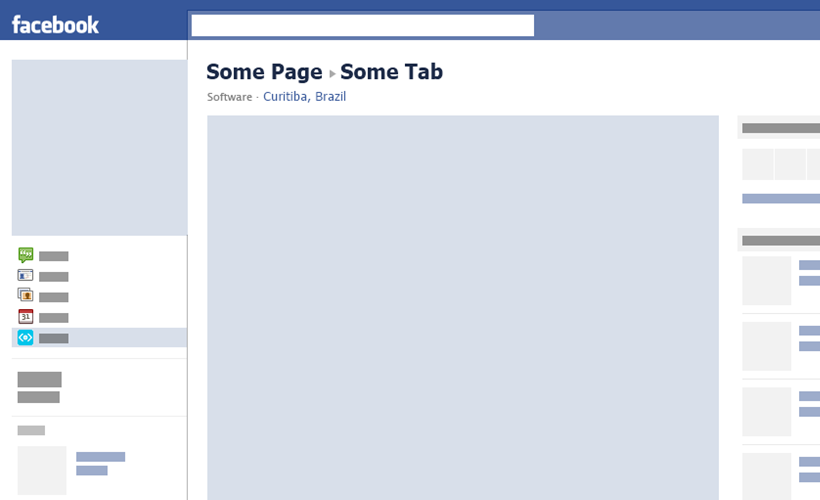
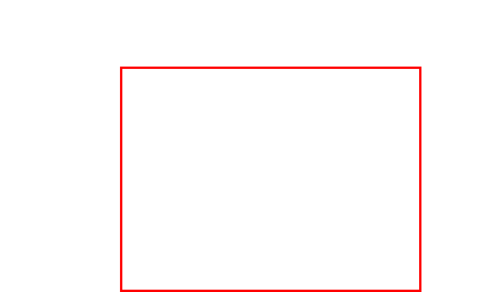
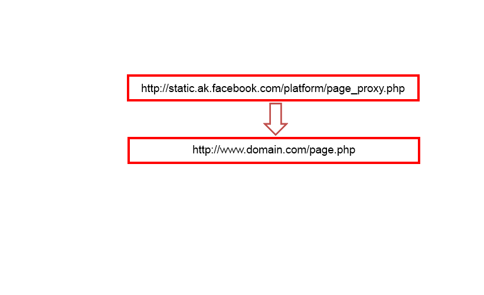
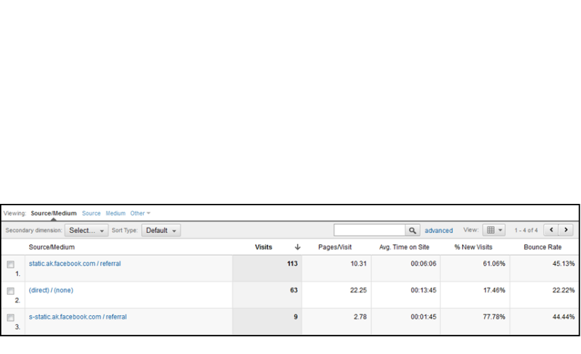
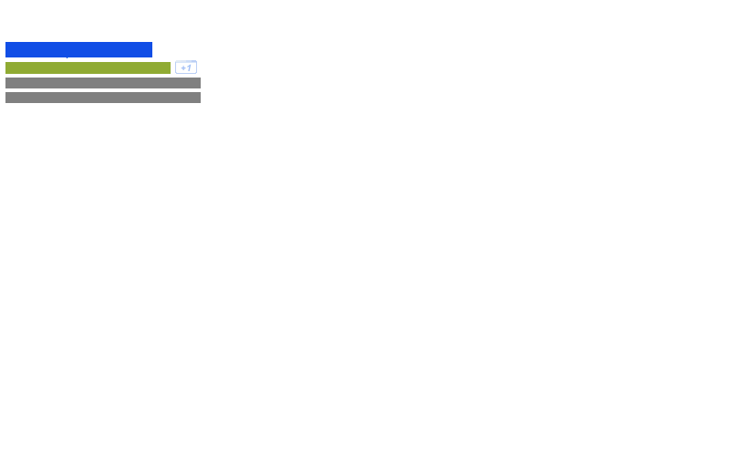
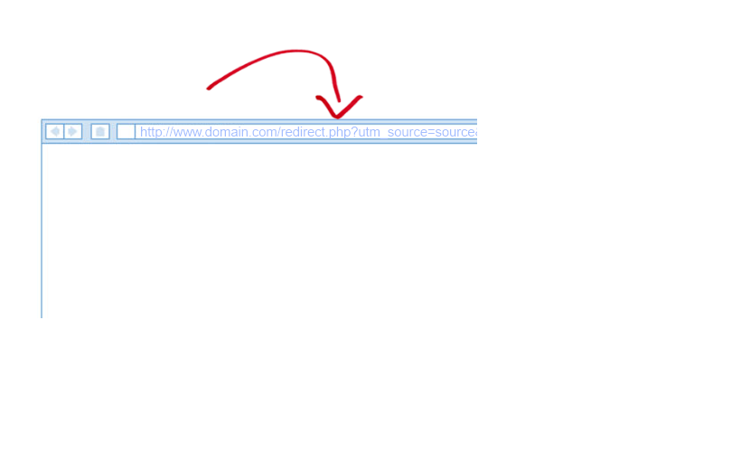
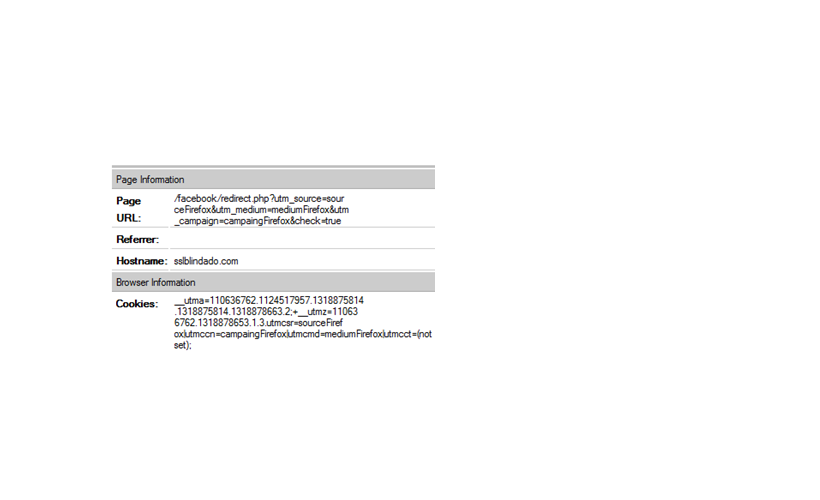
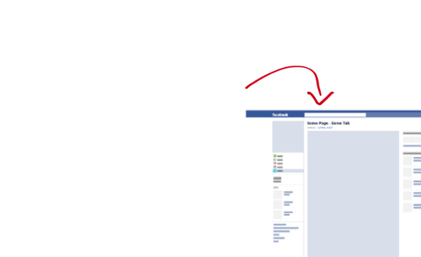
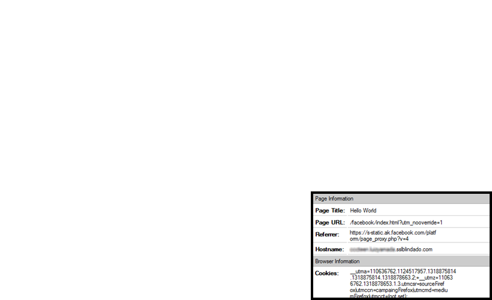

Google Analytics Hacks
Eduardo Cereto
Fábio Serra
Luiz Yamada
22 de Outubro de 2011
AJAX Tracking
AJAX Tracking
O problema dos sites em AJAX. Um único pageview.
Toda a navegação é feita por AJAX e carrega apenas um trecho de código.
var jqxhr = jQuery.ajax('./ajax_content.html');
jqxhr.success(function(data) {
//Handle data
alert(data);
});
A solução mais óbvia
Chamar um callback que dispara o pageview TODAS AS VEZES que fizer uma chamada em AJAX.
var jqxhr = jQuery.ajax('./ajax_content.html');
jqxhr.success(function(data){
_gaq.push(['_trackPageview', '/ajax_content.html']);
});
jqxhr.success(function(data) {
//Handle data
alert(data);
});
Função de Ajax customizada
Criar uma função customizada de AJAX para logar as chamadas de AJAX
function gaAjax (url, settings){
var jx = jQuery.ajax(url, settings);
jx.success(function(){
_gaq.push(['_trackPageview', url]);
});
return jx;
}
var jqxhr = gaAjax('./ajax_content.html');
jqxhr.success(function(data) {
//Handle data
alert(data);
});
A jQuery simplifica
A JQuery já oferece um callback global para qualquer chamada em AJAX.
jQuery(document).ajaxSuccess(function(e, xhr, settings){
_gaq.push(['_trackPageview', settings.url]);
});
var jqxhr = jQuery.ajax('./ajax_content.html');
jqxhr.success(function(data) {
//Handle data
alert(data);
});
Javascript Error Tracking
Javascript Error Tracking
Problema de códigos client-side, mesmos com todos os testes nem tudo pode ser validado.
- Todos os navegadores e suas infinidades de versões
- Diversos dispositivos, como celulares e tablets
- Velocidade da conexão e impactos nos timeouts
- Regras de firewall ou proxy
Seria ótimo uma forma de acompanhar os erros de Javascript da mesma forma que analiso um log de erros do Apache...
A solução mais óbvia
Compatível com todos os navegadores
function _trackJsError(exception) {
exception = exception || {};
if (typeof(_gaq) === "object") {
_gaq.push(['_trackEvent',
'JS Exception ' + (exception.name || 'Error'),
(exception.message || exception),
document.location.href ]);
}
//debug
alert('JS Exception ' + (exception.name || 'Error') +
"\n\nMessage: " + (exception.message || exception || '(message empty)') +
"\n\nURL: " + document.location.href);
}
try {
var i = 1/new_variable; // Error!
}
catch (e) { _trackJsError(e); }
Solução Global
Compatível com todos os navegadores (exceto Opera)
window.onerror = function(message, url, line) {
if (typeof(_gaq) === "object") {
_gaq.push(["_trackEvent",
"JS Exception Error",
message,
(url + " (" + line + ")") ]);
}
//debug
alert("JS Exception Error \n\nMessage: " + message +
"\n\nURL: " + url + "\n\nLine: " + line);
return true;
};
var i = 1/new_variable; // Error!
Solução Global com addEventListener
Compatível apenas com Webkit e parcialmente com Firefox e IE
_addEventListener(window, "error", _trackWindowJsError, false);
Para o código completo: http://jsfiddle.net/phms/nWdzR/
Compatível apenas com Webkit e parcialmente com Firefox
jQuery(window).error(_trackWindowJsError);
Para o código completo: http://jsfiddle.net/phms/tuQdd/
Traffic Source on Facebook Fan Page
O problema:
Mensurar as fontes de tráfego de campanhas que levam o usuário para uma fanpage no Facebook
Traffic Source on Facebook Fan Page




Traffic Source on Facebook Fan Page
Solução:
Mensurar as fontes de tráfego de campanhas que levam o usuário para uma fanpage no Facebook
Traffic Source on Facebook Fan Page





URL Intermediária (Exemplo em PHP)
- Incluir o arquivo phpga.php (disponibilizado no github)
- Executar a classe PHP
<?php $ga_params = array(); $ga = new GoogleAnlayticsMobile("UA-XXXXXXXX-X", ".domain.com", NULL, $ga_params); ?> <?=$ga->GetTrackingCode()?> - Realizar o redirecionamento para a fan page
<?php header("Location: https://www.facebook.com/pages/intercon/123?sk=app_123"); ?>
Tag do Google Analytics dentro do iFrame
Configurar a tag do Google Analytics para ignorar o endereço do proxy do Facebook como referral
var _gaq = _gaq || []; _gaq.push(['_setAccount', 'UA-XXXXXXXX-X']); _gaq.push(['_addIgnoredRef', 'static.ak.facebook.com']); _gaq.push(['_setDomainName', '.domain.com']); _gaq.push(['_trackPageview']);
Compatibilidade com o IE
Problema:
Caso a privacidade do usuário do IE estiver configurado como médio ou maior que isso, o IE irá bloquear a manipulação de cookies em sites externos que são abertos dentro de um iFrame
Compatibilidade com o IE
Solução:
Enviar um header P3P na página do iFrame
<?php header('P3P: CP="IE is often a NIGHTMARE"'); ?>
Opcional:
- P3P reference file: /w3c/p3p.xml
- Full P3P policy: /w3c/full-P3P-policy.xml
Resultado

Perguntas?
@eduardocereto @fabiophms @luizyamada